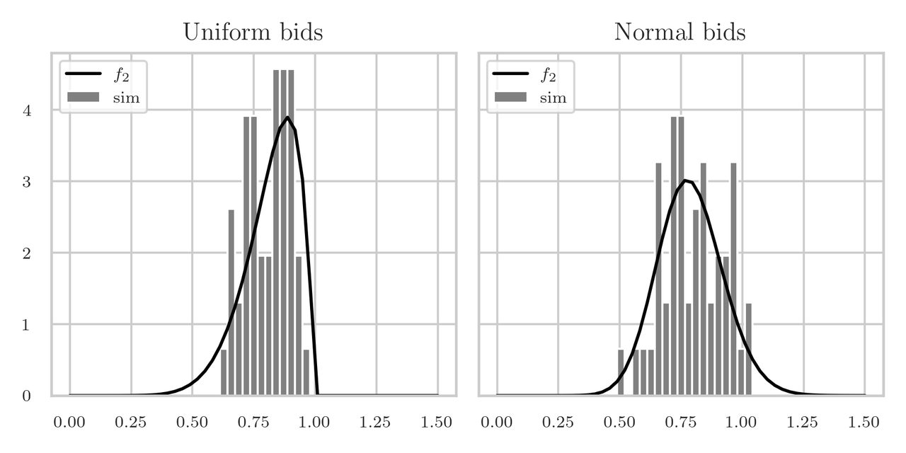

Vickrey auctions
Table of Contents
1. Introduction
A Vickrey auction is a sealed-bid auction where bidders submit bids without knowing the bids of other people. The winner is the participant with the highest bid, but interestingly, the price paid is the second-highest bid price rather than the highest. One way to understand this is to think about an auction in which bidders accept a price announced by the auctioneer by raising their hand. If the second highest bidder is prepared to pay \(A\), then s/he will stop when the price is \(A+1\), and this is the price at which the highest bidder gets the item. Clearly, the highest bidder does not reveal its own maximum price to win the auction; in fact, all bidders except the highest reveal their bid.1
If we have large debts, and an expensive car, should we organize a Vickrey auction to sell our car and pay our debts? How will the expected value and the variance of the second bid depend on the number of bidders? Perhaps we need a minimum number of bidders to reduce the probability of getting a low value for our car. To obtain insight into these questions we will make a histogram of simulated prices at which the car is sold in a Vickrey auction.
As a simple model suppose we have \(10\) bidders whose bids are idd rvs \(\{X_i\}_{i=1}^{10}\) according to some distribution \(F\), say.
To estimate the value of the second largest bid by simulation, we make a matrix \(X\) of size \(N\times 10\) with entries \(X_{i j} \sim F\); like this, each row corresponds to one round of an auction, and column \(j\) to the bids of the \(j\)th participant.
Finding the hightest bid per row is easy with the code np.max(X, axis=1), but for the Vickrey auction we don't need the largest, but the second largest element of each row.
One way to find this is to sort each row, and then pick the values of \(9\)th column of \(X\), i.e., X[:,8].
However, this is algorithmically more expensive than necessary: we don't need to sort all values of the row, we only need to the know the, so-called, \(k\)th median, with \(k=9\).
To build a better understanding of how to simulate efficiently the Vickrey auction, we first need to discuss some elementary, but highly useful, theory to express the complexity of algorithms. Then we apply this theory to an algorithm to solve the Traveling Salesman Problem (TSP) by means of recursion. As we will see, the implementation of the TSP is really elegant. Then we consider the complexity of two sorting algorithms. The second of these, quicksort, provides us with a very nice and efficient recursive algorith to find the \(k\)th median in an array of numbers. In the last section we use this algorithm to find the second highest bid in a Vickrey auction and plot of the density of these bids to obtain insight into the price we can expect for our car.
2. Some complexity theory
In simulation we often repeat the same algorithm with different so that we obtain statistical insight by means of many sample paths. Therefore the difference in time required by a dumb and a smart algorithm to complete one simulation run can be huge. One way to compare the speed of algorithms is by means of the concept of complexity, for which we use the order symbol \(O(\cdot)\). Here are two examples to illustrate the idea. First, when adding two \(n\)-digit numbers, we add the \(m\)th digit in the first number with the \(m\)th digit in the second number. We do the same operation for all digits, and since there are \(n\)-digits in total, the algorithm requires a number of additions that is \(O(n)\). Second, to multiply two \(n\)-digit numbers by hand, we multiply each digit of the first number by each digit of the second. Clearly this requires \(O(n^2)\) multiplications. Thus, with the \(O(\cdot)\) symbol, we express how the dominating term scales as a function of the input of the data, but we abstract away from the time each specific operation takes. In other words, whether an algorithm has \(4 n^3\) or \(5n^3\) complexity, in all such cases we say it is \(O(n^3)\). It is evident that the larger the power of the \(n\), the more execution time an algorithm need in general to complete for large input.
To practice a bit more with the \(O\) symbol, given a list of \(n\) elements, the following code finds the largest element:
X = [5, 8, 3]
M = X[0]
for x in X[1:]:
M = max(M, x)
Explain that this algorithm requires \(O(n)\) comparisons.
Solution
We store the value of first element in a variable \(M\), say. Then we compare \(M\) to the second element, and replace the value of \(M\) by the second if the second value is larger than \(M\), and so on. Since we need \(n-1\) comparisons in total, the complexity is \(O(n)\).
A somewhat more interesting example is the complexity of the traveling salesman problem (TSP).
This problem consists of finding the shortest possible route that visits, exactly once, each city of a given set of \(n\) cities, starting from a depot labeled \(0\).
The next code compute recursively the length of the shortest path.
We start at the depot and provide a set of cities.
When in the current city, we solve the tsp that remains after going to each city in cities.
(Take your time to understand the recursion.)
We add typing to clarity what sort of argument TSP is supposed to accept.
By the way, it might seem pointless to overload integers to city_id, but the meaning of the word city_id is much easier to understand.
city_id = int
length = float
def dist(i: city_id, j: city_id) -> length:
# An arbitrary distance function between cities i and j
return abs(i - j)
def tsp(current: city_id, cities: set[city_id]) -> length:
if not cities: # There are no remaining cities, so return home
return dist(current, 0)
L = []
for city in cities:
d = dist(current, city) + tsp(city, cities.difference([city]))
L.append(d)
return min(L)
depot = 0
cities = set([1, 2, 3, 4])
print(tsp(0, cities))
8
Why is the minimal lenght equal to \(8\)?
Solution
The distance from city \(0\) to \(1\) is \(1\), from city \(1\) to \(2\) also \(1\), and so on, until we arrive at city \(4\). Since returning to \(0\) has a cost of \(4\), the total cost is \(1 + 1 + 1 + 1 + 4\).
As an aside, the above code can be written as one list comprehension, like so:
def tsp(s: city_id, C: set[city_id]) -> length:
if not C:
return dist(s, 0)
return min(dist(s, c) + tsp(c, C.difference([c])) for c in C)
Explain that the number of possible routes scales as \(O(n!)\). As a consequence, solving the TSP for any reasonable number of cities is totally infeasible.
Solution
To start the route we have \(n\) choices, for the second city we have \(n-1\) choices, etc.
The line if not cities: requires attention: it is the condition to tell the recursion to stop.
More generally, when applying recursion, it is essential to ensure that eventually some stopping criterion is satisfied, for otherwise the algorithm might never stop running.
Hence, when desiging recursive algorithms, always check that the algorithm contains a stopping condition.
Identify the stopping criterion for the game in which we used one die to choose uniformly a winner among 19 children.
This closes our discussion of complexity theory. Much more can be said about it, but for our purposes this suffices. We now have the means to compare the efficiency of algorithms.
2.1. Sorting
As said, we can identify the second highest bid for the Vickrey auction by sorting the bids per simulated auction. Thus, let us consider the complexity of sorting algorithms. The first, called bubblesort, is a simple, but bad algorithm; the second, called quicksort, is based on recursion and a very good algorithm.
A simple silly, idea to sort a list of \(n\) elements is like this. Compare the first element to the second element, and swap if the first is larger than the second. Then compare the second to the third and swap if necessary, and so on until the last element. Then we are sure that the largest element is moved to the last position of the list. Now apply the same strategy to the list but just up to the second to last (because the last is already in the right place), and so on. Here is the code.
def bubble_sort(A):
for i in range(len(A)):
for j in range(len(A) - i - 1):
if A[j] > A[j + 1]:
A[j], A[j + 1] = A[j + 1], A[j] # swap
return A
print(bubble_sort([5, 8, 2]))
[2, 5, 8]
Explain that bubblesort requires \(O(n^2)\) comparisons to sort a list of \(n\) elements.
Solution
There is a for loop in a for loop. When this is the case, the complexity is often \(O(n^2)\). Here, in particular, the first pass compares \(n-1\) elements, the second \(n-2\), and so on. The total number of comparisons is \(n-1 + n-2 + n-2 + \cdots 1 = n(n-1)/2 = O(n^{2})\).
A much faster way to sort is to use recursion.
The idea is simple, but hard to invent.
Take a random element of the list and call this the pivot.
Then compare all elements of the list to the pivot.
If an element is less than the pivot, put it in a left array, if larger into a right array, and otherwise in a middle array.
Clealry, middle contains all elements equal to the pivot, so this array needs no further attention.
Then apply recursively the same sorting idea to left and right.
For the code below, assume that the list has no ordering.
Thus, any element will do, so we pick pivot = A[0].
2
def quicksort(A):
if len(A) <= 1:
return A
pivot, left, middle, right = A[0], [], [], []
for x in A:
if x < pivot:
left.append(x)
elif x > pivot:
right.append(x)
else:
middle.append(pivot) # why not x?
return quicksort(left) + middle + quicksort(right)
This is a recursive algorithm so we need a stopping condition. One: Which line implements this condition? Two: Why do we use arrays and not sets?
Solution
Line \(2\) is the stopping criterion. Next, sets are not necessarily ordered.
How can we estimate the complexity (i.e., the number of comparisons) of this algorithm?
The for loop requires \(n\) comparisons.
Then, in expectation, left and right have about \(n/2\) elements.
Each requires \(n/2\) comparisons, so the second round also needs \(n\) comparisons.
The third round also needs \(n\) comparisons, but over arrays with \(n/4\) elements.
So, the arrays will be depleted of elements when the number of rounds \(m\) is such that \(2^{m} \leq n < 2^{m+1}\).
Clearly, \(m\approx \log_2 n\), and the overall complexity must be \(O(n\log_{2}n)\).
Therefore, when \(n \geq 10^{3}\), quicksort is much, much faster than bubblesort.
Let us relate this to our primary problem: finding the second largest bid in a list of \(n=10\) bids. If we use sorting for our example auction with \(n=10\) bidders, we run into a complexity of \(n \log_{2} n = \cdot 10 \log_{2} 10 \approx 40\). To find the maximum takes \(10\) comparisons in total. Now realize that we are not interested in sorting each and very row, we just want to know the second highest bid. Thus, the work we need to per row must lie somewhere between 10 and 40 comparisons.
And, indeed, we can do better when we realize that we are actually looking for the \(k\)-median, which is defined as the element in a set that has \(k\) smaller or equal elements. In particular, for the Vickrey auction we need \(k=n-1\).
What type of \(k\)-median is the normal median of a set of \(n\) elements?
Solution
For the normal median, we want to know the element such half of the set is smaller and the other half is larger. Thus, we should take \(k=n/2\) if \(n\) is even, and otherwise the average of the \(k\)th and \(k+1)\th element.
The next, pretty, algorithm to find the \(k\)th mediam borrows directly from Quicksort.
Select a pivot, throw all elements of the set \(A\) that are smaller or equal to the pivot in left, and throw the rest in right.
If left contains exactly \(k\) then we know that the pivot is the \(k\)-median, and we are done.
Else, if left contains more than \(k\) elements, the \(k\)-median must lie in left.
Otherwise, we can focus on right, but look for the \(k-l\)-median instead, where \(l\) is the number of elements of left, as all elements in left are smaller than the pivot.
def k_median(A, k):
pivot, left, right = A[0], [], []
for x in A:
if x <= pivot:
left.append(x)
else:
right.append(x)
if len(left) == k:
return pivot
if len(left) > k:
return k_median(left, k)
return k_median(right, k - len(left))
x = [4, 5, 2, 8]
print(k_median(x, len(x) - 1))
What is the complexity of this \(k\)-median algorithm?
3. The Vickrey auction
After the above excursions to identify an efficient algorithm that finds the second highest number \(Y_{2}\), say in a list, we return to our initial questions about selling our car by means of a Vickrey-auction. The aim is to obtain a histogram of the density of \(Y_{2}\)}. Before actually doing the simulation, let us consider the problem from a somewhat higher perspective. Actually, we are interested in the density \(f_{2}\) of the second highest element of the order statistic of the \(\{X_{i}\}\).
Let the bids \(\{X_i\}\) have cdf \(F\), survivor function \(G\) and density \(f\). Then explain that the probability that \(Y_{2}\in [x, x+\d x]\) is given by
\begin{equation*} f_{2}(x) \d x = \P{Y_{2}\in [x, x+\d x]} = \frac{10!}{8!} (F(x))^{8} G(x) f(x) \d x. \end{equation*}Solution
To have \(Y_{2}\in[x, x+\d x]\), one bid must lie in \([x, x+\d x]\), eight in \((-\infty, x)\) and one in \([x+\d x, \infty)\). We can order these 10 bids in \(10!\) ways, and the eight bids at the left of \(x\) in \(8!\) ways. Since all bids are independent, we can take the product of these probabilities to get the final probability.
In the next code we compute \(f_2\), carry out a simulation and plot the results. We'll use the normal and uniform distributions of scipy.
import matplotlib.pyplot as plt
import numpy as np
from scipy.stats import norm, uniform
The parameters are like this. The grid is used for plotting.
bidders = 10
k = bidders - 2
num_sim = 50
gen = np.random.default_rng(3)
grid = np.linspace(0, 1.5, num=50)
Explain that to get the second highest bid, we have to set k = bidders -2 rather than k = bidders-1.
Solution
Arrays in python start at \(0\). Hence, the last element of an \(n\) array has index \(n-1\). We are look for the second highest, and this has index \(n-2\).
We start with assuming that \(X_i\sim\Unif{[0,1]}\). We need the cdf, sf and pdf for the computation of \(f_2\) by means of the formula of the previous exercise.
X = uniform(0, 1)
f, F, G = X.pdf(grid), X.cdf(grid), X.sf(grid)
f2 = 10 * 9 * f * F**8 * G
To simulate, we generate a matrix with bids such that each of its \(N\) rows corresponds to an auction of \(n=10\) bidders, and each element is a bid uniform on \([0,1]\).
To get the (simulated) value for \(Y_{2}\), we use the numpy function partition, which uses a fast algorithm to compute the \(k\)th median.
The \(k\)-median is at the \(k\)th column of each row, hence the keyword axis=1.
bids = X.rvs((num_sim, bidders), random_state=gen)
sim2 = np.partition(bids, k, axis=1)[:, k]
It remains to make plots.
ax1.set_title("Uniform bids")
ax1.plot(grid, f2, color="black", label="$f_2$")
ax1.hist(sim2, bins=grid, density=True, color="gray", label="sim")
ax1.legend(loc="upper left")
We run virtually the same code for \(X_i\sim \Norm{1/2, 1/\sqrt{12}}\), and plot in Fig. 1 the density \(f_2\) and the histogram obtained by simulation. The right panel of the figure shows the histogram for a simulation with \(X_i\sim\Norm{\mu=0.5, \sigma=1/\sqrt{12}}\). Clearly, the model of the bid sizes has a major effect on the price we can get for our expensive car.

Figure 1: The density \(f_2\) of the second highest bid \(Y_{2}\). In the left panel \(X_i\sim\Unif{[0,1]}\), in the right \(X_i\sim\Norm{\mu=0.5, \sigma=1/\sqrt{12}}\).
The estimated mean and std of \(Y\) for the left hand panel is \(0.81\). Can you come up with a simple explanation for the mean?
Solution
When we have 10 bidders, we have to place 10 uniform rvs on the interval \([0,1]\), hence, we divide this interval in 11 pieces, each of expected size \(1/11\). Hence, the second largest must lie at \(9/11 = 0.82\).
4. Summary
In this section we studied a bit of complexity theory. This allowed us to understand why the quicksort algorithm, based on recursion, is a much better algorithm than bubblesort. Recursion helped us also to develop a nice and efficient method to compute the $k$-median, and to write the TSP in just a few lines. We applied all this to estimating the density of the price of the second bid in an Vickrey auction, because this is the value we obtain for good sold under this auction mechanism. Finally, we realized that the second bid is actually the second value of the order statistic of a number of iid bids.
Actually, I did not expect that the density would have such a big tail to the left, as is shown in Fig. 1. Perhaps this explains why, instead of Vickrey auctions, sellers might prefer Dutch auctions in which the selling price starts very high and decreases until the first person accepts the price. However, let's not draw simplistic conclusions; we should turn to a serious book on auction theory instead. In our work we are occupied with showing the many uses of recursion, some maths, and coding.